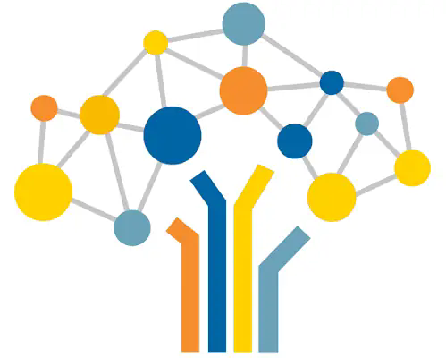

You provide the context
- You explain the assignment, audience, rubric, and goals.
- The AI may optimize for giving you a fast, complete answer.
- You decide how much of the writing process to hand over.

PapyrusAIPapyrusAI is a generative AI environment designed to support writing development and AI literacy.
Open PapyrusAIA general-purpose AI is built to answer many kinds of requests. PapyrusAI is built for learning in a writing course.
Sometimes the support you need is already built into the conversation.
In this case, you would choose the Organization Feedback prompt.
Explore the Prompt Directory to see whether there is already a prompt that matches the kind of writing help you need.
⌕ Explore the Prompt DirectoryPapyrusAI is sometimes instructed not to give you the easiest answer immediately.
This may feel slower—or more frustrating—than a general chatbot that immediately produces an answer.
That struggle is designed for learning. PapyrusAI supports your decision-making rather than taking over the writing process.
The habits you practice here can transfer to ChatGPT, Claude, Gemini, and other AI tools you use later.
“I was surprised to see how helpful the prompts were for starting your writing process… With ChatGPT, the help could feel generic or miss the nuance or audience. PapyrusAI helped me more than other AI tools.”
Use these three resources whenever you need a quick walkthrough, setup help, or more PapyrusAI materials.
Use the written guide when you want to quickly find your way around PapyrusAI.
Open the guide ↗Watch the first 6 minutes for account setup and the basic navigation you need to get started.
Watch on YouTube ↗Explore additional PapyrusAI and generative AI resources for higher education.
Visit the resource site ↗You were probably wondering. Click to peek behind this part, too.
Fair question. PapyrusAI is meant to be a place where you can work through the messy parts of writing—uncertainty, false starts, revision questions, and all.
If conversations are reviewed, the point is to understand where students get stuck and how support can be improved.
The system is designed not to simply do the writing for you. It can ask you to explain, decide, revise, and respond—so the conversation itself is built around learning.
Your instructor wants to understand where you are struggling so they can support you better. They are also learning, over time, where AI is actually helping your writing—and where you may still need something different.
Between classes, grading, meetings, and email, reading every PapyrusAI conversation line by line is not exactly a realistic hobby.